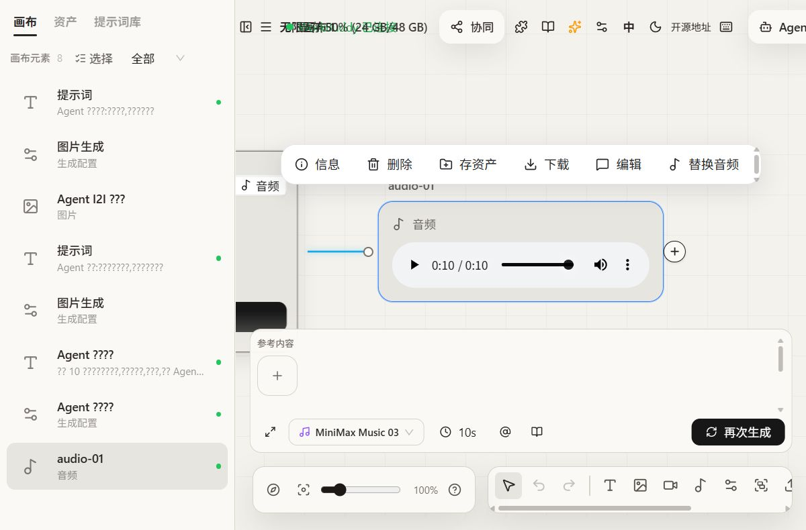

Infinite Canvas · Runtime Acceptance
本轮核心验收通过
内部 Agent 画布能力
验收报告
基于本机真实服务、HTTP 工具调用与独立浏览器画布，对 OpenAI 结构化协议、真实工作流绑定、异常拦截、结构化回执及 ComfyUI 音频生成进行端到端验证。
35OpenAI 工具定义
29 / 6严格模式 / 开放模式
10 秒真实音频生成并完整播放
0最终运行中及失败任务
01
验收结论
本轮范围内的核心能力均取得真实运行证据。
结论：通过。 Agent 已能通过统一结构化工具搭建画布、绑定真实 ComfyUI 工作流、返回可追踪执行结果，并完成音频生成与播放闭环。未通过旧通用模型字段静默回退。
- Web、当前源码版 Canvas Agent 与本地 ComfyUI 均正常运行。
- OpenAI Function Calling 工具清单及严格 JSON Schema 约束符合实现契约。
- 默认文生图、显式 Profile 选择、参考图自动切换 I2I 均形成正确三元绑定。
- 无效工作流明确失败，失败前后画布节点数一致，未写入半成品。
- MiniMax Music 03 成功生成 10 秒音频，画布播放器实际播放至结束。
02
范围与运行环境
使用独立测试页面和独立测试画布，未关闭用户既有浏览器窗口或标签页。
| 检查项 | 实际目标 | 实测结果 | 结论 |
|---|---|---|---|
| Web 服务 | http://127.0.0.1:3000 | HTTP 200，页面正常加载 | 通过 |
| Canvas Agent | http://127.0.0.1:17371 | 旧 dist 进程已替换为当前源码进程；健康检查及新接口可用 | 通过 |
| ComfyUI | http://127.0.0.1:8188 | HTTP 200，真实音频任务执行成功 | 通过 |
| 独立测试画布 | 项目 GzeN01KCvTWqVUZhqZmr- | 页面显示“WorkBuddy 已连接”和“本地 Agent 已连接” | 通过 |
03
OpenAI 工具协议与参数解析
通过 GET /api/tools/openai 与 POST /api/tools 实测。
| 编号 | 验收点 | 实测证据 | 结论 |
|---|---|---|---|
| API-01 | 工具清单 | 返回 ok: true，共 35 个 type: "function" 工具 | 通过 |
| API-02 | 严格与开放模式分流 | 29 个严格工具、6 个开放工具；canvas_generate_image 为 strict: true | 通过 |
| API-03 | 严格 Schema 约束 | 全部属性进入 required；additionalProperties: false；channelId 允许 null | 通过 |
| API-04 | OpenAI null 可选参数归一化 | 将生成流程全部可选字段置为 null，仅指定提示词、图片模式和 autoRun: false，成功创建流程 | 通过 |
实际执行链路
POST /api/tools→
CanvasSession→
SSE tool_call→
浏览器工作流绑定→
applyOps→
run_generation
本次结果来自上述真实链路，不是直接调用绑定函数或伪造画布快照。
04
真实工作流绑定与异常拦截
检查 channelId / workflowId / modelId 及失败时的画布原子性。
默认文生图流程
- channelId
builtin- workflowId
builtin-t2i-qrw-d- modelId
image-qwen- 执行方式
- 仅搭建流程，未触发生图
Profile 指定 + 参考图
- channelId
builtin- workflowId
builtin-i2i-qrw-d- modelId
image-qwen- 执行方式
- 自动选择 I2I，参考连线已创建
失败场景：不存在的工作流
传入 workflowId: "__agent_missing_workflow__" 后，接口返回明确错误：
渠道「系统内置 ComfyUI」中不存在适用于当前生成模式的工作流：__agent_missing_workflow__失败前节点数 5，失败后节点数 5。说明绑定在校验失败时中止，未创建提示词或配置节点，也未回退旧模型字段。
05
结构化执行回执
创建流程与音频生成均返回可追踪的画布执行结果。
| 回执字段 | 默认生图流程实测 | 音频生成实测 |
|---|---|---|
success / requestId | 成功，请求 ID 存在 | 成功，请求 ID 存在 |
createdNodeIds | 1 个文本节点 + 1 个配置节点 | 1 个文本节点 + 1 个配置节点 |
createdConnectionIds | 1 条提示词连线 | 1 条提示词连线 |
generationNodeIds | 空数组，符合 autoRun: false | 包含音频配置节点 ID，表示已触发生成 |
snapshot | 返回最新项目、节点和连线快照 | 返回最新项目、节点和连线快照 |
语义边界：
generationNodeIds 仅表示生成已触发，不代表媒体已经完成。最终状态需以节点状态和生成任务查询为准，本轮音频已进一步完成终态与播放验证。06
真实音频生成与播放
由 Agent 创建音频流程并立即提交本地 ComfyUI。
任务配置
提示词要求生成一段无歌词的 10 秒舒缓钢琴独奏。
工作流：builtin-audio-minimax-music-3
模型：audio-minimax-music-3
渠道：builtin
最终结果
生成完成后画布出现 audio-01 音频节点，状态为 success。播放器从 0:05 / 0:10 推进至 0:10 / 0:10，暂停按钮恢复为播放按钮。
最终任务汇总：running: 0、failed: 0、succeeded: 2。

07
验收边界与未覆盖事项
以下项目不被本次“通过”结论覆盖。
- 未破坏性删除现有工作流缺少工作流的 Fail-loud 行为使用无效
workflowId验证；“删除目标分类全部工作流后重试”的破坏性场景未执行。 - 未实际生成图片默认 T2I 与参考图 I2I 均以
autoRun: false验证流程搭建、连线和三元绑定；未提交图片媒体生成。 - 未执行构建或桌面端打包本轮任务是启动与运行验收，不包含 Vite/TypeScript 构建、Windows EXE/MSI 打包或生产部署验证。
- 自动化测试记录并非本轮复跑施工阶段记录为 Canvas Agent 132 项通过、2 项跳过，新增 Web 工作流绑定测试 4 项通过；既有
use-config-store.test.ts因测试环境localStorage初始化问题未启动。 - 验收未引入代码变更本轮仅产生本报告及测试画布数据；原未跟踪
.trae/未纳入操作。
08
最终判定
针对本轮确认的施工范围给出验收判定。
通过本轮运行验收，可进入用户复核。 结构化协议、真实工作流绑定、异常失败、执行回执和音频生成闭环均有实际证据。该判定不等同于整个 Infinite Canvas 项目的全量发布验收。